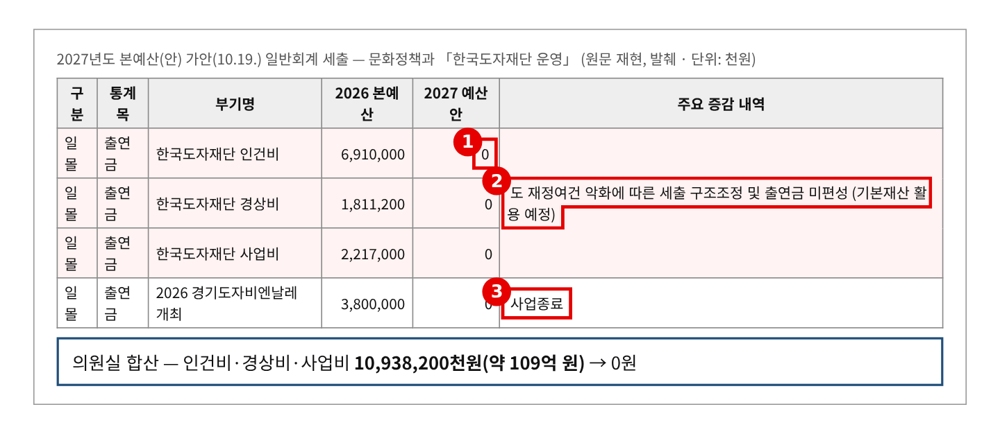
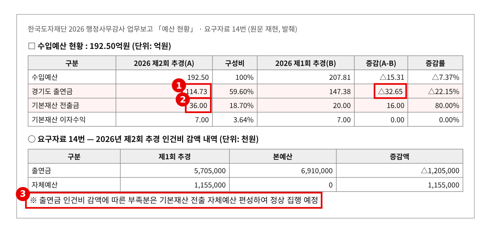
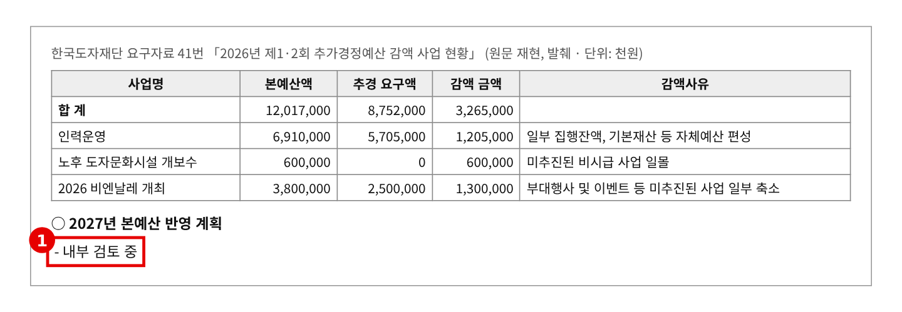
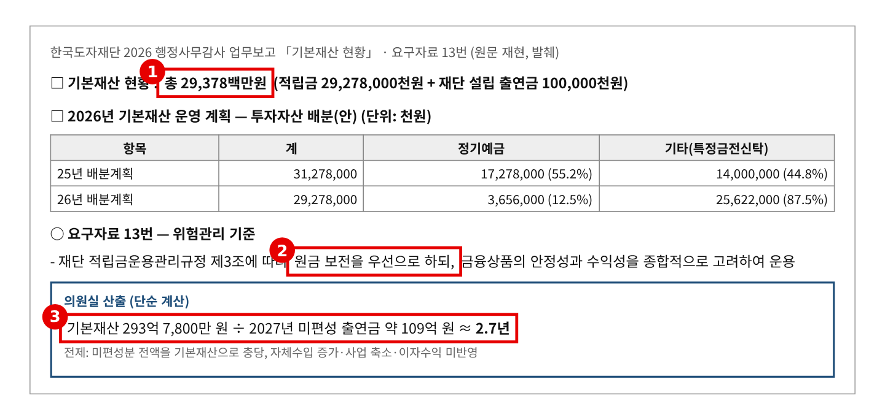
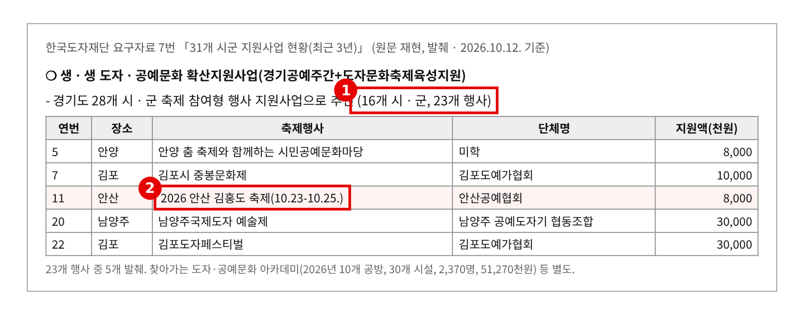

2026년 행정사무감사 질의서 (발언용 · 7분) — 기관 3일차
출연금 0원, 기본재산으로 몇 년 버팁니까
— 2027년 109억 공백, 293억 기본재산, 지킬 사업의 순서
문화체육관광위원회 황은화 위원 → 한국도자재단 대표이사
| ① 내년 109억 원, 계획이 없다 | 2027년 가안 재단 출연금 인건비·경상비·사업비 전액 0원(약 109억 원) — “기본재산 활용 예정” → 재단의 2027년 예산 반영 계획은 “내부 검토 중” 한 줄 |
| ② 기본재산, 3년이면 바닥 | 기본재산 293억 7,800만 원. 올해 이미 출연금 32억 감액, 기본재산 전출 20억 → 36억 원 → 109억 원씩 꺼내면 단순 계산으로 2.7년 — 재단 규정은 “원금 보전 우선” |
| ③ 무엇을 지키나 | 16개 시군 23개 축제의 도예 체험 지원(안산 김홍도 축제 포함), 비엔날레는 2027년 가안 “사업종료” → 출연금 0원 아래에서 지킬 사업의 순서가 없다 |
※ 의원실 메모 (발언 제외) — 다른 위원 요구자료와 겹치는지 점검 · 특정금전신탁 비중(44.8%→87.5%)은 전예슬 위원 단독 요구(13번)다. 신탁 전환 의결·위험관리는 전예슬 위원 몫으로 두고, 이 질의는 “원금 보전 우선” 한 구절만 인용한다. · 14번(인건비 감액·이사장 공석)·41번(추경 감액, “2027년 반영 계획: 내부 검토 중”)은 한규찬 위원 요구다. 한 위원이 먼저 물었다면 질문 1은 “앞서 말씀이 있었습니다만”으로 짧게 넘기고 질문 2(소진 시점)·질문 3(지킬 사업)에 시간을 쓴다. · 5번 경영혁신(이오수·이지혜·한규찬), 10·15·16번 비엔날레 성과(이진형·이오수·이병숙·한규찬)는 다루지 않는다. 비엔날레는 다음 개최 재원만 묻는다. 7번 시군 지원사업은 황은화 위원 공동 요구(김승기·안시현·이미정·전예슬·채명신). · “2.7년”은 미편성 출연금 전액을 기본재산으로 메운다고 가정한 의원실 단순 계산이다(자체수입 증가·사업 축소·이자 미반영). 발언에서는 “단순 계산으로”를 꼭 붙인다. 답변자는 대표이사 기준으로 썼다 — 당일 직무대행이면 호칭만 바꾼다. |
※ 발언 중 [근거 n] 표시는 맨 뒤 「근거자료」 번호입니다. 읽지 않고, 해당 자료를 화면에 띄웁니다.
■ 발언 — 도입
대표이사님, 재단 살림살이에 대해 여쭙겠습니다.
내년 예산안 가안에 재단 출연금이 한 푼도 없습니다. 인건비 69억, 경상비 18억, 사업비 22억 원이 모두 0원입니다. 설명은 “기본재산 활용 예정”, 한 줄입니다. [근거 1]
오늘은 내년 살림을 어떻게 꾸릴지, 기본재산으로 언제까지 버틸 수 있는지, 그리고 무엇을 지킬지 세 가지를 여쭙겠습니다.
▶ 질문 1. 내년 109억 원, 어디서 나옵니까
올해 재단 수입 192억 5천만 원 가운데 도 출연금이 114억 7천만 원, 60%입니다. 이 돈이 내년에 통째로 빠집니다. [근거 2]
사실 올해부터 시작됐습니다. 2차 추경에서 도 출연금이 32억 6,500만 원 줄었고, 기본재산에서 꺼낸 돈은 20억 원에서 36억 원으로 늘었습니다. 직원 인건비 11억 5천만 원도 기본재산으로 메웠습니다. [근거 2]
그런데 2027년 예산을 어떻게 짤지 물었더니, 답은 “내부 검토 중” 한 줄이었습니다. [근거 3]
대표이사님, 내년 인건비와 운영비 109억 원, 어디서 마련합니까? 감사가 끝나기 전에 숫자로 된 계획을 내 주실 수 있습니까?
▷ "기본재산을 활용하겠다"
→ 그 기본재산 얘기를 바로 하겠습니다.
▶ 질문 2. 기본재산, 3년이면 바닥납니다
재단 기본재산은 293억 7,800만 원입니다. 내년에 빠지는 109억 원을 모두 여기서 꺼내면, 단순 계산으로 3년을 못 버팁니다. 원금이 줄면 해마다 들어오던 이자 7억 원도 같이 줄어듭니다. [근거 4]
재단 적립금 운용 규정은 “원금 보전을 우선”으로 한다고 되어 있습니다. 지켜야 할 원금을 생활비로 쓰고 있는 겁니다. [근거 4]
기본재산은 재단이 문을 닫지 않게 받쳐 주는 마지막 바닥입니다. 한 번 꺼내 쓰면 다시 채울 길이 없습니다.
대표이사님, 기본재산을 언제까지, 얼마까지 쓸 계획입니까? 더는 꺼내면 안 되는 최소 금액을 정해 두셨습니까?
▷ "도와 협의해 출연금 일부를 다시 반영하도록 노력하겠다"
→ 노력은 계획이 아닙니다. 도에 요청한 금액과 근거, 도의 답을 문서로 내 주십시오.
▶ 질문 3. 무엇을 지키고 무엇을 줄입니까
돈이 줄면 일을 줄여야 합니다. 문제는 무엇부터 줄이느냐입니다.
재단은 올해 16개 시군, 23개 축제에 도예인을 보내 공예 체험을 열었습니다. 안산 김홍도 축제에도 안산공예협회가 참여했습니다. 금액은 몇백만 원이지만, 시군 도예인에게는 거의 유일한 통로입니다. [근거 5]
비엔날레는 올해 출연금으로 치렀고, 내년 가안에는 “사업종료”라고 적혀 있습니다. 다음 비엔날레는 무슨 돈으로 엽니까? [근거 1]
대표이사님, 출연금이 0원이 되면 재단이 끝까지 지킬 사업은 무엇입니까? 시군 도예단체 지원은 내년에도 남습니까?
▷ "모든 사업을 최대한 유지하겠다"
→ 109억 원이 빠지는데 모두 유지할 수는 없습니다. 사업별 우선순위를 숫자로 보여 주십시오.
■ 마무리 · 요구사항
대표이사님, 도자재단은 도자의 고장 경기도가 가진 하나뿐인 전문기관입니다. 출연금을 끊는 건 도가 정한 일이지만, 그다음을 준비하는 건 재단의 몫입니다. 기본재산을 생활비처럼 쓰다 보면 3년 뒤 재단이 남지 않을 수도 있습니다. 끝까지 챙기겠습니다.
하나, 2027년 재원 계획(기본재산 사용액, 자체수입, 사업 축소 내역)을 감사 종료 전까지 내 주십시오.
둘, 기본재산 최소 유지 금액과 연도별 사용 계획을 정해 2027년 본예산 상임위 심사 전까지 보고해 주십시오.
셋, 2027년 사업 우선순위(시군 도예단체 지원, 다음 비엔날레 재원 포함)를 2027년 2월까지 보고해 주십시오.
■ 참고 · 감사 중 추가 요구자료
· 2026년 기본재산 전출 결정 문서(이사회 의결·도 승인 여부)와 전출 용도
· 2027년 출연금 미편성 관련 도-재단 협의 공문
· 예상 소요시간 — 발언 약 3분 20초(996음절) + 집행부 답변 약 1분 + 자료 화면 전환 약 25초 = 약 4분 45초. 재질의까지 쓰면 약 5분 30초 — 7분 안. ※ 분당 300음절 기준
근 거 자 료
빨간 상자·번호는 발언에서 짚는 부분입니다. "원문 재현"은 업무보고·요구자료 원문 표를 그대로 옮긴 것이고, "의원실 산출"은 원자료로 계산한 값입니다.
▶ 도입·질문 1 관련
근거 1. 2027년 본예산(안) — 재단 출연금 전액 미편성 
※ 출처: 「2027년 본예산(안) 일반회계 세출」 가안(10.19. 공개분, 최종본 아님) 문화정책과 「한국도자재단 운영」 |
근거 2. 올해부터 출연금은 줄고 기본재산 전출은 늘었다 
※ 출처: 한국도자재단 「2026 행정사무감사 업무보고(11.13.)」 Ⅰ. 일반현황 「예산 현황」, 한국도자재단 「2026 행정사무감사 요구자료 취합본」 14번 「2026년 추가경정예산 인건비 감액 및 임원 공석 관련」(한규찬 위원 요구) |
근거 3. 2027년 본예산 반영 계획 — “내부 검토 중” 
※ 출처: 한국도자재단 「2026 행정사무감사 요구자료 취합본」 공통 41번 「2026년 제1·2회 추가경정예산 감액 사업 현황」(경영기획팀) — 한규찬 위원 요구 |
▶ 질문 2 관련
근거 4. 기본재산 293억 원 — 규정은 “원금 보전 우선” 
※ 출처: 한국도자재단 「2026 행정사무감사 업무보고(11.13.)」 「기본재산 현황」·「2026년 기본재산 운영 계획」, 한국도자재단 「2026 행정사무감사 요구자료 취합본」 13번 「기본재산 운용 현황(최근 3년)」(경영지원팀) |
▶ 질문 3 관련
근거 5. 시군 도예단체 지원 — 16개 시군 23개 축제 
※ 출처: 한국도자재단 「2026 행정사무감사 요구자료 취합본」 7번 「31개 시군 지원사업 현황(최근 3년)」(문화확산팀·산업진흥팀·마케팅팀) — 김승기·안시현·이미정·전예슬·채명신·황은화 위원 요구 |